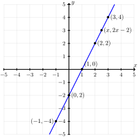
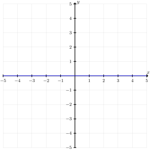
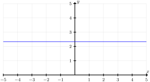
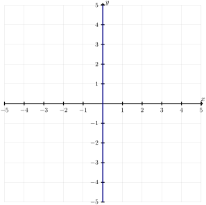
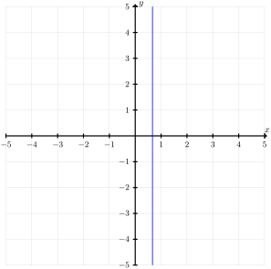

Identify points in the plane that are solutions to equations in two variables.
When two quantities vary together, the relationship is modeled by an equation in two variables. By convention, mathematicians use the variables \(x\) and \(y\text{.}\) Often, it is convenient to visualize this relationship using a graph.
Subsection1.2.1Solutions to an Equation
Definition1.2.1.Solution to an Equation.
A solution to an equation in the variables \(x\) and \(y\) is an ordered pair \((a,b)\) that make the equation true when
the first coordinate, \(a\text{,}\) is substituted into the equation for \(x\text{,}\) and
the second coordinate, \(b\text{,}\) is substituted into the equation for \(y\text{.}\)
Example1.2.2.
Consider the equation \(y = 2x - 2\text{.}\) The ordered pair \((1,0)\) is a solution to this equation because
The graph of an equation in the variables \(x\) and \(y\) consists of all the points in the plane that are solutions to the equation.
Most equations that we will encounter will have infinitely many solutions. Since we cannot find all of the solutions, we will mostly rely on studying the shape of certain graphs and some specific solutions.
The graph of the equation \(y = 2x - 2\) is shown below. The \(y\)-intercept occurs when \(x = 0\) and
\begin{align*}
y \amp = 2(0) -2 \amp\amp \text{Simplify}\\
y \amp = -2.
\end{align*}
The \(x\)-intercept occurs when \(y = 0\) and
\begin{align*}
0 \amp = 2x - 2 \amp\amp \text{Add}\ 2\ \text{to both sides}\\
2 \amp = 2x \amp\amp \text{Divide both sides by}\ 2\\
1 \amp = x \amp\amp \text{Swap sides}\\
x \amp = 1.
\end{align*}
This tells us, as ordered pairs, the \(x\)-intercept occurs at \((1,0)\) and the \(y\)-intercept occurs at \((0,-2)\text{.}\) In general, every point on this line has coordinates of the form \((x,2x - 2)\text{,}\) where \(x\) can be any real number we choose.

Figure1.2.7.The graph of the equation \(y = 2x - 2\text{.}\)
Subsection1.2.2Horizontal Lines
The equation
\begin{equation*}
y = a
\end{equation*}
where \(a\) is a constant has solutions of the form \(\left(x, a\right)\text{,}\) where \(x\) is allowed to be any real number. The graph of this equation is a horizontal line.
Example1.2.8.
Graph the equation \(y = 0\text{.}\)
Solution.
The solutions to the equation \(y = 0\) have the form \((x, 0)\text{,}\) where \(x\) is allowed to be any real number. The graph of this equation forms the \(x\)-axis in the Cartesian plane.

Figure1.2.9.
Example1.2.10.
Graph the equation \(0x + 3y = 7\text{.}\)
Solution.
The equation \(0x + 3y = 7\) simplifies to \(y = \frac{7}{3}\text{.}\) The graph of this equation is a horizontal line \(\frac{7}{3}\) units above the \(x\)-axis.

Figure1.2.11.The graph of \(y = \frac{7}{3}\text{.}\)
Subsection1.2.3Vertical Lines
The equation
\begin{equation*}
x = a
\end{equation*}
where \(a\) is a constant has solutions of the form \(\left(a, y\right)\text{,}\) where \(y\) is allowed to be any real number. The graph of this equation is a vertical line.
Example1.2.12.
Graph the equation \(x = 0\text{.}\)
Solution.
The solutions to the equation \(x = 0\) have the form \((0, y)\text{,}\) where \(y\) is allowed to be any real number. The graph of this equation forms the \(y\)-axis in the Cartesian plane.

Figure1.2.13.
Example1.2.14.
Graph the equation \(3x + 0y = 2\text{.}\)
Solution.
The equation \(3x + 0y = 2\) reduces to \(x = \frac{2}{3}\text{.}\) The graph of this equation is a vertical line \(\frac{2}{3}\) units to the right of the \(y\)-axis.

Figure1.2.15.The graph of \(x = \frac{2}{3}\text{.}\)
Identify points in the plane that are solutions to equations in two variables.
Consider the equation \(2x - 3y = 6\text{.}\) The graph of this equation is given below. Use the equation and the graph to answer the following questions.
Figure1.2.16.Graph of \(2x - 3y = 6\text{.}\)
1.
Find the value of \(x\) such that the point \((x,0)\) lies on the graph of the equation. Plot this point on the graph above and label it.
2.
Find the value of \(y\) such that the point \((0,y)\) lies on the graph of the equation. Plot this point on the graph above and label it.
3.
Is the point \((-3,-4)\) on the graph of the equation? Justify your answer using the equation of the graph.
4.
Is the point \(\left(4,\frac{1}{2}\right)\) on the graph of the equation? Justify your answer using the equation of the graph.